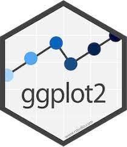
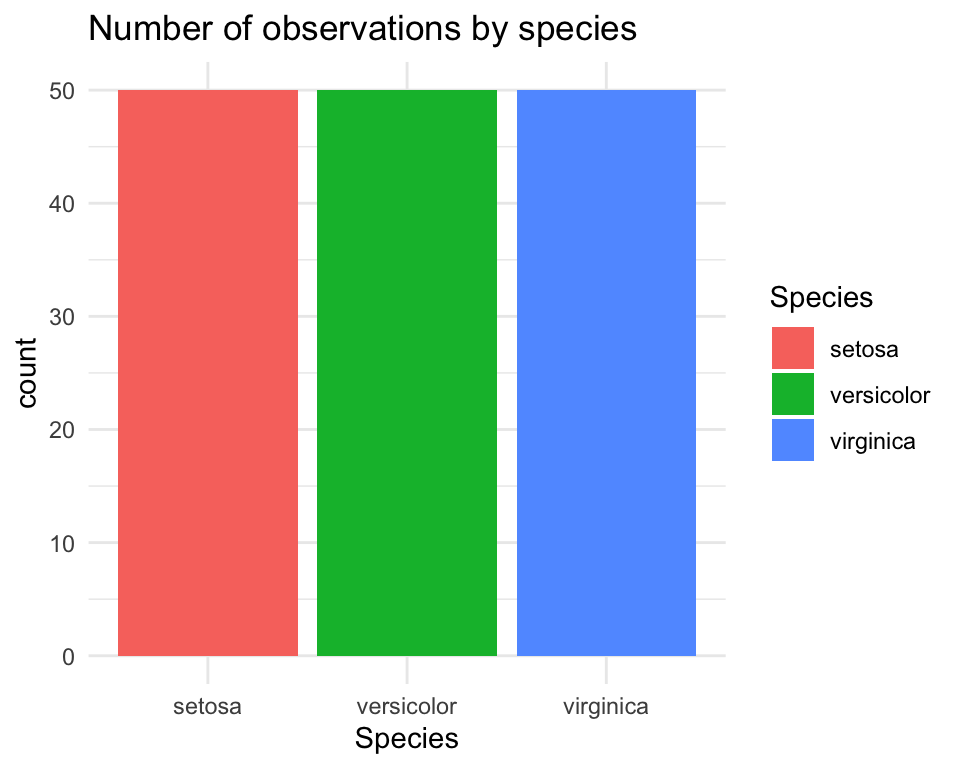
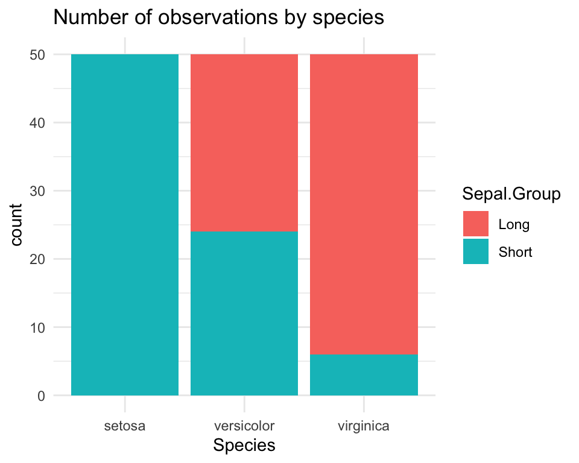
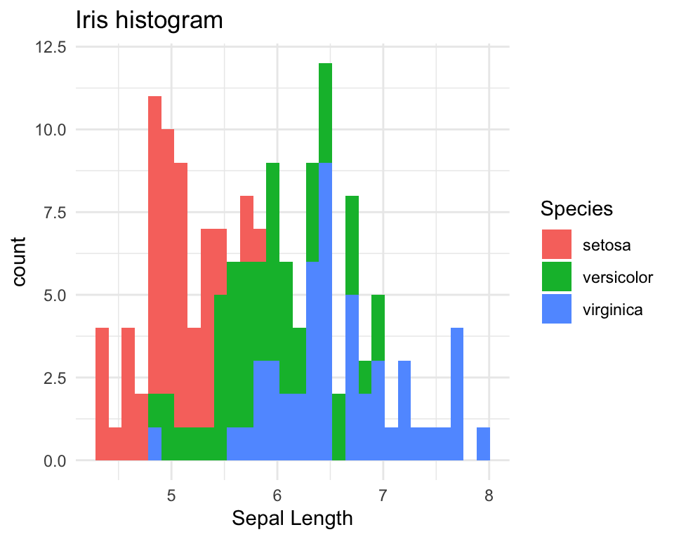
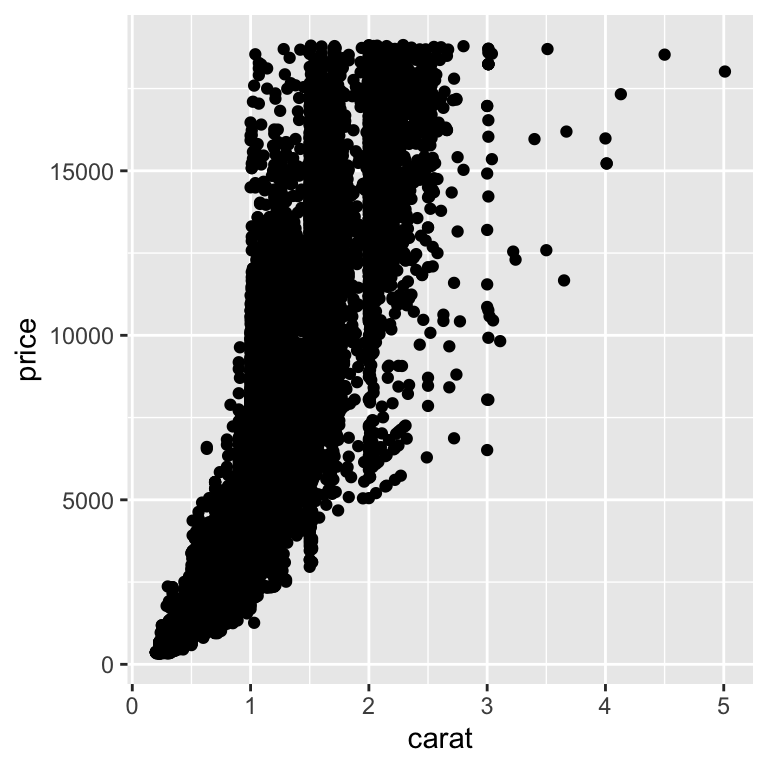
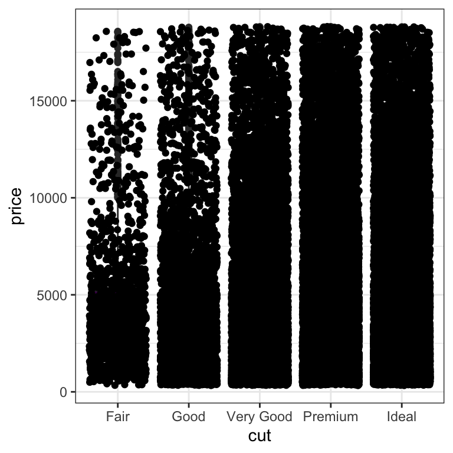
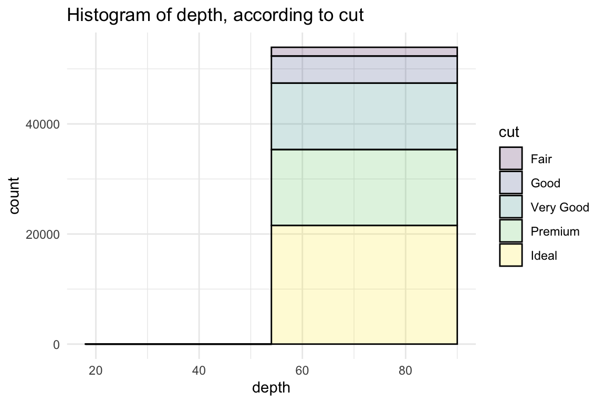

Chapter 3 Visualisering - ggplot2 dag 1

3.1 Inledning og videoer
Dette kapitel giver en introduktion til, hvordan man visualiserer data med R-pakken ggplot2.
3.1.1 Læringsmålene for dag 1
I skal være i stand til at:
- Forstå hvad “Grammar of Graphics” betyder og sammenhængen med den ggplot2-pakke
- Lære at bruge funktionen
ggplotog den relevante geoms (geom_point(),geom_bar(),geom_histogram(),geom_boxplot(),geom_density()) - Lave en ‘færdig’ figur med en titel og korrekte etiketter på akserne
- Begynde at arbejde med farver og temaer
3.1.2 Hvad er ggplot2?
De fleste i kurset har brugt funktionen plot(), som er den standard base-R funktion til at lave et plot. Man kan fortsætte med at bruge plotfunktioner fra base-pakken, men det kan være meget tidskrævende, især når man vil lave mere komplekse og pænere plots.
En alternativ løsning er pakken ggplot2, som står for “Grammar of Graphics” (se nærmere forklaring nedenfor). ggplot2 er den mest populær pakke fra tidyverse. Som vi vil se i dette kapitel, har den en ret logisk tilgang, hvor man opbygger et plot i forskellige komponenter. Det kan virke uoverskueligt i starten, men når man først har lært det, er det faktisk meget intuitivt. Det nyttige i at lære ggplot2 kan også ses når man begynder at integrere de andre tidyverse-pakker fra kapitel 4.
3.1.3 Brugen af materialerne
Jeg har optaget videoer, hvor jeg viser nogle ‘quick-start’ type eksempler i min RStudio. Videoerne er ikke designet til at indeholde alle detaljer, men til at fungere som udgangspunkt for at komme i gang med øvelserne. Vær opmærksom på, at al kode, der vises i videoerne, også kan findes i kursusnotaterne, hvis du selv vil afprøve den. Jeg anbefaler, at du bruger kursusnotaterne som en reference gennem kurset, når man arbejder på opgaverne. Vær også opmærksom på, at jeg nogle gange introducerer nye ting i selve øvelserne.
3.1.4 Video ressourcer
- I video 1 demonstrerer jeg, hvordan man lave sit første plot med
ggplot2.
Link her hvis det ikke virker nedenunder: https://player.vimeo.com/video/701245598
- I video 2 dækker vi boxplots.
Link her hvis det ikke virker nedenunder: https://player.vimeo.com/video/701245695
- I video 3 demonstrerer jeg barplots.
Link her hvis det ikke virker nedenunder: https://player.vimeo.com/video/704025240
- Video 4: Histogram og density plots
Link her hvis det ikke virker nedenunder: https://player.vimeo.com/video/703699213
3.2 Transition fra base R til ggplot2
Vi starter som udgangspunkt med base-R og viser, hvordan man laver et lignende plot med ggplot2. Til dette formål bruger vi det indbyggede datasæt, der hedder iris. Datasættet er meget berømt, og det er næsten sikkert, at du allerede er stødt på det uden for dette kurus, enten på nettet eller i forbindelse med andre kurser, som handler om R. Datasættet var oprindeligt samlet af statistikeren og biologen Ronald Fisher i 1936 og indeholder 50 stikprøver, der dækker forskellige målinger for hver af tre arter af planten iris (Iris setosa, Iris virginica og Iris Versicolor).

Som vi også så i grundlæggende R, kan man indlæse et indbyggede datasæt med hjælp af funktionen data().
data(iris)Først vil vi have et overblik over datasættet. Til at gøre dette bruger vi summary():
summary(iris)## Sepal.Length Sepal.Width Petal.Length Petal.Width
## Min. :4.300 Min. :2.000 Min. :1.000 Min. :0.100
## 1st Qu.:5.100 1st Qu.:2.800 1st Qu.:1.600 1st Qu.:0.300
## Median :5.800 Median :3.000 Median :4.350 Median :1.300
## Mean :5.843 Mean :3.057 Mean :3.758 Mean :1.199
## 3rd Qu.:6.400 3rd Qu.:3.300 3rd Qu.:5.100 3rd Qu.:1.800
## Max. :7.900 Max. :4.400 Max. :6.900 Max. :2.500
## Species
## setosa :50
## versicolor:50
## virginica :50
##
##
## Forestil, at vi gerne vil lave et plot, som viser sammenhængen mellem længden og bredden af sepal (bægerblad), eller specifikt er vi interesseret i kolonnerne iris$Sepal.Length og iris$Sepal.Width. Lad os starte med at visualisere variablerne i base-R, ved at bruge plot:
plot(iris$Sepal.Length, iris$Sepal.Width)
Man kan gøre det meget pænere eksempelvis ved at bruge forskellige farver til at betegne de forskellige arter, eller ved at give en hensigtsmæssig overskrift eller aksenavne.
3.3 Vores første ggplot
Vi vil imidlertid fokusere på at lave et lignende plot med pakken ggplot2. Hvis man ikke allerede har gjort det, så husk at indlæse pakken i R for at få nedenstående koder til at virke.
#install.packages("ggplot2") #hvis ikke allerede installeret
library(ggplot2)For at lave et plot med ggplot2 tager man altid udgangspunkt i funktionen ggplot(). Først specificerer vi vores data - altså at vi gerne vil bruge dataframe iris. Dernæst angiver vi indenfor funktionen aes() (som sidder indenfor ggplot()), at x-aksen skal være Sepal.Length og y-aksen Sepal.Width. Det ser sådan ud:
ggplot(iris, aes(x=Sepal.Length, y=Sepal.Width))
Koden fungerer, men bemærk, at plottet er helt tomt og derfor ikke særligt brugbart. Men der er skabt et grundlag (se aksenavne osv.). Det er tomt fordi vi endnu ikke har specificeret, hvilken plottype det skal være - for eksempel søljediagram/barplot, histogram, punktplot/scatter plot (jeg vælge de engelske begreber herfra for at skabe den bedste sammenhæng med koden). Vi vil gerne bruge et scatter plot, som i ggplot2 er angivet med funktionen geom_point(). Vi tilslutter derfor funktionen geom_point() til den ggplot() funktion, som vi allerede har specificeret. Husk altid, at man bruger + til at forbinde de to “komponenter” (altså ggplot() og geom_point()) af plottet (ellers få vi fortsat et tomt plot).
Koden er således:
ggplot(iris, aes(x=Sepal.Length, y=Sepal.Width)) +
geom_point()
Bemærk, at vi ikke har skrevet noget indeni de runde parenteser i funktionen geom_point(). Det betyder, at vi accepterer alle standard- eller ‘default’ parametre, som funktionen tager. Hvis vi vil have noget andet end de standard parametre, kan vi godt specificere det. For eksempel kan vi gøre punkterne lidt større end ved standarden (prøve at tjekke ?geom_point() for at se en list overfor de mulige parametre, som man kan justere):
ggplot(iris, aes(x=Sepal.Length, y=Sepal.Width)) +
geom_point(size=3)Vi har nu et plot, som vi kan sammenligne med det ovenstående plot, vi lavet i base-pakken. Ligesom i base-pakken vil vi gerne tilføje nogle ting for at gøre vores plot til vores færdige figur.. Her i ggplot2 gøres det ved at tilføje flere komponenter ovenpå, med brugen af +, ligesom vi gjorde da vi tilføjede geom_point() til ggplot(). Første vil jeg gerne skrive nogle orde om ggplot2 generelt, og filosofien bag.
3.4 Lidt om ggplot2
3.4.1 Syntax
Som vi har lige set, ggplot() tager altid udgangspunkt i en dataframe, som vi specificerer først. I ggplot() indeholder den dataframe variablerne vi skal bruge til at få lavet figuren. Til at gøre det til noget mere konkret, lad os sammenligne koden mellem base-pakken og ggplot() til vores iris data. I base-R angav vi direkte vektorer iris$Sepal.Length og iris$Sepal.Width som parametre x og y, der tager henholdsvis først og anden-plads i funktionen plot(). Til gengæld i ggplot(), specificerer man først den hele dataramme i den første plads, og så bagefter med brugen af aes() angav vi hvordan x-aksen og y-aksen ser ud.
#baseplot solution
plot(iris$Sepal.Length, iris$Sepal.Width)
#ggplot2 solution
ggplot(iris, aes(x=Sepal.Length, y=Sepal.Width)) +
geom_point()En anden fordel af ggplot2() er, at man kan fortsætte med at forbedre plottet ved at tilføje ting ovenpå det eksisterende plot, i hvilket kan beskrives som en lagbaseret tilgang. Dette gøres intuitivt ved at bruge “+”. Man kan derfor starte med noget simpelt, og gradvist opbygge det noget mere kompleks. Dette er uafhængigt af den type plot, vi laver.
3.4.2 Hvad betyder egentlig grammar of graphics?
Den gg i ggplot2 står for grammar of graphics, og filosofien er, at man skal definere en sætningsstruktur til de figurer, man laver. Med andre ord består vores figur af forskellige komponenter, som man forbinder med “+”..

Her er en beskrivelse af de forskellige komponenter, som bruges til at opbygge et plot:
- Data: Datarammer tages altid som udgangspunkt.
- Aesthetics: Variabler til x-aksen eller y-aksen, farve, form eller størrelse
- Scale: Skalering af værdier eller repræsentation af flere værdier
- Geometries: Også kaldet geoms - bestemmer hvilken type plot, der skal laves, som f.eks. søjler, punkter, linjer osv.
- Statistics: Tilføjer f.eks. mean, median eller kvartiler, som beskriver dataene.
- Facets: Opretter subplots baseret på flere dimensioner.
- Coordinate system: Transformerer akser og ændrer afstanden for de viste data.
3.4.3 Globale versus lokale æstetik
I de fleste tilfælde bruger man funktionen aes() indenfor ggplot(), hvilket betyder, at variablerne, der er specificeret inden for aes(), gælder globalt over alle komponenter i plottet. Man kan faktisk også skrive en lokal aes() inden for selve geom-funktionen, som i følgende eksempel:
ggplot(iris) +
geom_point(aes(x=Sepal.Length, y=Sepal.Width))
Vi får det samme plot som før, men det er kun geom_point(), der er påvirket af specificeringen inden for aes(). I simple situationer som dette er der ingen forskel, men når man har mange forskellige komponenter i spil, kan det nogle gange give mening at bruge lokale æstetik.
3.5 Specificere etiketter og titel
Vi tager udgangspunkt i plottet, som vi har lavet i ovenstående, og prøver at gøre det bedre ved at tilføje nye etiketter og en titel. I ggplot kan man opdatere y-akse og x-akse etiketter ved at bruge henholdsvis ylab og xlab:
ggplot(iris, aes(x=Sepal.Length, y=Sepal.Width)) +
geom_point(size=3) +
xlab("Sepal Length") +
ylab("Sepal Width")Vi tilføjer en titel med funktionen ggtitle():
ggplot(iris, aes(x=Sepal.Length, y=Sepal.Width)) +
geom_point(size=3) +
xlab("Sepal Length") +
ylab("Sepal Width") +
ggtitle("Scatter plot of Sepal Width vs Sepal Length")3.6 Ændre farver
I ggplot2 kan man bruge “automatisk” farver for at skelne mellem de tre forskellige Species i datasættet iris. I den næste lektion vil vi dække, hvordan man kan være mere fleksibel ved at sætte farver manuelt, men ofte vil vi bare bruge den nemme løsning som udgangspunkt og eventuelt rette op på det senere med en ny komponent, hvis der er behov for det. Vi skriver color=Species indenfor aes(), som i følgende eksempel. Bemærk, at der kommer en ‘legend’ med, der fortæller os, hvilken art, der får hvilken farve.
ggplot(iris, aes(x=Sepal.Length, y=Sepal.Width,color=Species)) +
geom_point(size=3) +
xlab("Sepal Length") +
ylab("Sepal Width") +
ggtitle("Scatter plot of Sepal Width vs Sepal Length")3.7 Ændre tema
Det standard tema har en grå baggrund og “grid” linjer, men man kan godt vælge noget andet. For eksempel kan man tilføje theme_minimal() som i nedenstående eksempel. Her får vi en hvid baggrund i stedet, mens man stadig får grid linjer. Man kan afprøve forskellige temaer (for eksempel theme_classic(), theme_bw()), og se, hvilket tema, der fungerer bedst i det enkelte plot.
ggplot(iris, aes(x=Sepal.Length, y=Sepal.Width,color=Species)) +
geom_point(size=3) +
xlab("Sepal Length") +
ylab("Sepal Width") +
ggtitle("Scatter plot of Sepal Width vs Sepal Length") +
theme_minimal()
Her er nogle eksempler på mulige temaer, som du kan bruge i dine plotter (det er dog generelt op til dig).
| tema |
|---|
theme_grey() |
theme_classic() |
theme_bw() |
theme_dark() |
theme_minimal() |
theme_light() |
Se også her, hvis du er interesseret i flere temaer: https://r-charts.com/ggplot2/themes/
3.8 Forskellige geoms
Indtil videre har vi kun arbejdet med geom_point() for at lave et scatter plot, men der er også andre “geoms”, som kan bruges til forskellige typer af plots. Her er en liste over nogle af de mest almindelige geoms:
| geom | plot |
|---|---|
geom_point() |
scatter plot |
geom_bar() |
barplot |
geom_boxplot() |
boxplot |
geom_histogram() |
histogram |
geom_density() |
density |
For at lave disse geoms, skal man tilføje dem til ggplot()-kommandoen ved at bruge +, på samme måde som vi gjorde med geom_point(). Der kan dog være specifikke overvejelser, der er værd at have i tankerne for nogle plot-typer, før man bruger dem.
3.8.1 Boxplot (geom_box)
For at lave et boxplot af Sepal.Length opdelt efter Species, angiver vi Species på x-aksen og Sepal.Length på y-aksen. Vi vil også have, at hver art få sin egen farve, så bruger vi fill=Species.
ggplot(data=iris, aes(x=Species, y=Sepal.Length,fill=Species)) +
geom_boxplot() +
ylab("Sepal Length") +
ggtitle("Boxplot") +
theme_minimal()Lave punkter ovenpå
Det kan ofte være nyttigt at plotte de faktiske datapunkter oven på et boxplot, så man kan se både fordelingen i dataene samt de rå data. En løsning er at benytte geom_point() ved at tilføje det som komponent over vores eksisterende kode.
ggplot(data=iris, aes(x=Species, y=Sepal.Length,fill=Species)) +
geom_boxplot() +
geom_point() +
ylab("Sepal Length") +
ggtitle("Boxplot with points overlayed") +
theme_minimal()Man kan dog se, at det ikke er særlig informativt, da alle punkter er på den samme lodrette linje. Hvis der er mange punkter med samme eller næsten samme værdier, kan man ikke se de fleste af dem i plottet. En bedre løsning er at indføre noget tilfældighed i punkterne langs x-aksen, så at man tydeligere kan se dem. Dette kaldes “jitter”, og man specificere jitter ved at bruge geom_jitter() i stedet for geom_point().
ggplot(data=iris, aes(x=Species, y=Sepal.Length,fill=Species)) +
geom_boxplot() +
geom_jitter() +
ylab("Sepal Length") +
ggtitle("Boxplot with jitter") +
theme_minimal()Man kan også specificere alpha, som gøre punkterne mere gennemsigtige og mindre markante. Man kan også ændre på width, som kontrollerer deres spredning langs x-axsen.
ggplot(data=iris, aes(x=Species, y=Sepal.Length,fill=Species)) +
geom_boxplot() +
geom_jitter(alpha=0.5,width=0.2) +
ylab("Sepal Length") +
ggtitle("Boxplot with jitter and transparency") +
theme_minimal()Fjerne legend hvis unødvendige
Man kan se, at når man specificerer farver, får man en legende på højre side af plottet. I dette tilfælde er det faktisk ikke nødvendigt, da man kan se uden legende, hvad de tre boxplots refererer til. Derfor fjerner vi legenden fra plottet ved at bruge theme(legend.position="none").
ggplot(data=iris, aes(x=Species, y=Sepal.Length,fill=Species)) +
geom_boxplot() +
geom_jitter() +
ylab("Sepal Length") +
ggtitle("Boxplot with jitter and no legend") +
theme(legend.position="none")3.8.2 Barplot (geom_bar)
Med ggplot() kan man repræsentere data i et barplot ved at bruge geom_bar(). Her vil vi gerne tælle antallet af observationer for hver art (variablen Species) og visualisere dem som søjler. Indenfor geom_bar() specificerer vi derfor stat="count".
Vi bruger også fill=Species for at lave en forskellig farve automatisk for hver af de tre arter. Bemærk, at det var color=Species i det forudgående plot, når vi anvendte geom_point(). Det skyldes, at color bruges til punkter og linjer, mens fill er til større områder, der bliver udfyldt, såsom søjler og histogrammer.
ggplot(iris, aes(x=Species,fill=Species)) +
geom_bar(stat = "count") +
ggtitle("Number of observations by species") +
theme_minimal()
Barplot: stack vs dodge
Hvis man har flere katagoriske variabler, kan man lave barplots på forskellige måder. Da der er en ekstra katagorisk variabel i datasættet, laver jeg én, der hedder Sepal.Group, der skelne imellem Long og Short værdier af variablen Sepal.Length. Her specificerer jeg bare (med funktionen ifelse()), at hvis Sepal.Length er længere end den gennemsnitlige Sepal.Length, så er det betragtet Long, ellers er det Short, som i følgende:
iris$Sepal.Group <-
ifelse(iris$Sepal.Length>mean(iris$Sepal.Length), #test
"Long", #if TRUE
"Short") #if FALSENår jeg laver en barplot med de to variabler, tilføjer jeg Sepal.Group med fill, og ggplot splitter antal observationer efter Sepal.Group med farver som repræsenterer Sepal.Group, og tilføjer en tilsvarende legende.
ggplot(iris, aes(x=Species, fill=Sepal.Group)) +
geom_bar(stat = "count") +
ggtitle("Number of observations by species") +
theme_minimal()
Mange gange foretrækker man at få søjlerne stående ved siden af hinanden i stedet for at overlappe. Dette kan opnås ved blot at tilføje position="dodge" ind i geom_bar().
ggplot(iris, aes(x=Species, fill=Sepal.Group)) +
geom_bar(stat = "count", position = "dodge") +
ggtitle("Number of observations by species") +
theme_minimal()
Som et eksempel på fleksibiliteten i pakken ggplot2, kan jeg nævne, at det kan være irriterende, når bredden af søjlen for arten setosa i et barplot er dobbelt så bred som de andre søjler, fordi der ikke er nogen observationer i setosa-gruppen med en “Long” værdi i variablen Sepal.Group. En løsning på dette kan findes ved at tilføje position=position_dodge2(preserve = "single") i geom_bar(). Denne parameter gør bredden på alle søjler ens, uanset om der er data i alle kategorier eller ej.
ggplot(iris, aes(x=Species, fill=Sepal.Group)) +
geom_bar(stat = "count", position = position_dodge2(preserve = "single")) +
ggtitle("Number of observations by species") +
theme_minimal()
3.8.3 Histogram (geom_histogram)
Et histogram bruges til at give et overblik over, hvordan dataene fordeler sig. Med ggplot2 kan man lave et histogram med geom_histogram(). Den x-akse variabel skal være en kontinuerlig variabel. Her specificerer vi, at vi gerne vil have et histogram for hver art (Species).
ggplot(data=iris, aes(x=Sepal.Length, fill=Species)) +
geom_histogram() +
xlab("Sepal Length") +
ggtitle("Iris histogram") +
theme_minimal()
Man kan også gøre det nemmere at skelne mellem de tre arter ved at sætte alpha=0.5 inden for geom_histogram og ved at angive en linje farve som mulighed ind i geom_histogram().
ggplot(data=iris, aes(x=Sepal.Length, fill=Species)) +
geom_histogram(alpha=0.5,color="black") +
xlab("Sepal Length") +
ggtitle("Iris histogram") +
theme_minimal()
3.8.4 Density (geom_density)
Med et density plot kan man, ligesom med et histogram, se fordelingen af dataene i form af en glat eller “smooth” kurve.
ggplot(data=iris, aes(x=Sepal.Length, color=Species)) +
geom_density() +
xlab("Sepal Length") +
ggtitle("Density plot") +
theme_minimal()Density plot med fill og gennemsigtig farver
Vi kan angive en værdi for alpha indenfor geom_density(). Den parameter alpha specificerer gennemsigtigheden af de density kurver i plottet.
ggplot(data=iris, aes(x=Sepal.Length, fill=Species)) +
geom_density(alpha=0.5) +
xlab("Sepal Length") +
ggtitle("Density plot with alpha=0.5") +
theme_minimal()
Tilføje middelværdi linjer
Vi bruger funktionen tapply() til at beregne middelværdierne af Sepal.Length for hver af de tre Species. Vi kan derefter tilføje dem som lodrette linjer til vores plot. Her bruger vi geom_vline() (OBS det er geom_hline(), hvis man vil have en vandret linje) og fortæller, at xintercept skal være lig med de middelværdier, som vi har beregnet. Parameteren lty=2 betyder, at vi gerne vil have en stiplede (“dashed”) linje.
means <- tapply(iris$Sepal.Length,iris$Species,median)
ggplot(data=iris, aes(x=Sepal.Length, color=Species)) +
geom_density(alpha=0.5) +
xlab("Sepal Length") +
ggtitle("Density plot with alpha=0.5") +
geom_vline(xintercept = means,lty=2) +
theme_minimal()3.8.5 Line plot (geom_line())
geom_line() kan bruges til at lave linjediagrammer. Her indlæser jeg datasættet population og laver en delmængde til landene i Skandinavien.
library(tidyr)
data(population)
population_scand <- population[population$country %in% c("Denmark","Sweden","Norway","Finland"),]
head(population_scand)## # A tibble: 6 × 3
## country year population
## <chr> <dbl> <dbl>
## 1 Denmark 1995 5232582
## 2 Denmark 1996 5254383
## 3 Denmark 1997 5276683
## 4 Denmark 1998 5298680
## 5 Denmark 1999 5319410
## 6 Denmark 2000 5338283Når tallene i variablen population er ret store, kan det være en god idé at normalisere, så de betegner befolkningsstørrelser i millioner.
population_scand$population <- population_scand$population/1e06Her laver jeg et plot med geom_line(), så vi kan se udviklingen i befolkningsstørrelserne over tid. For at få det til at virke, skal man huske at angive group inden for aes(), udover at man specificerer farven med colour:
ggplot(data = population_scand, aes(x = year, y = population, group = country, colour = country)) +
geom_line() +
labs(title = "Populations in Scandinavia over time", x = "År", y = "Befolkningsstørrelse i millioner") +
theme_minimal()
3.9 Troubleshooting
Her er blot en lille liste over nogle ting, der kan forårsage fejl, når man kører kode med ggplot2. Jeg tilføjer også andre ting, som kan opstå i vores lektion :).
ggplot(data=iris, aes(....)): Husk her, atdata=iriser korrekt og ikkeData=iris(R skelner mellem store og små bogstaver). Man kan også undlade at brugedata=og skrive bareirisi stedet for.Forkert stavning: Dobbelttjek, at du har stavet variabel- eller funktionsnavne korrekt.
Glemt
+-symbol: For at forbinde komponenterne i plottet skal man huske at tilføje+i slutningen af en linje og skrive de næste komponenter bagefter (man behøver ikke at skrive hver komponent på en ny linje, men det gør det nemmere at læse koden).Skrev
%>%-symbolet i stedet for+: De øvrige pakker fra tidyverse bruger%>%.Glemt parentes: Her har man glemt den sidste parentes, der skal være
fill=Species))og ikkefill=Species). Man får bare en+, fordi R forventer, at man fortsætter med at skrive mere kode.
> ggplot(data=iris, aes(x=Sepal.Length, fill=Species)
+ fillogcolour- indenforaes()referererfilltil at man fylder fk. bars eller regioner med farver, ogcolourreferere til farven af linjer eller punkter.
3.10 Problemstillinger
1) Quiz på Absalon - den hedder Quiz - ggplot2 part 1.
OBS: Husk at lave følgende øvelser i R Markdown. Det er god praksis at sikre, at jeres dokument kan knitte - i selve eksamen afleverer du et html dokument.
- Lav et nyt R Markdown-dokument og fjern eksempelkoden. Husk at oprette en ny chunk ved at trykke på “Insert” ny chunk” eller bruge genvejstastene CMD+ALT+I eller CTRL+ALT+I. Jeg anbefaler at oprette en ny chunk for hver plot, I laver.
Vi bruger datasættet diamonds. Husk at først indlæse dataene:
data(diamonds)Her er beskrivelsen af diamonds:
Prices of over 50,000 round cut diamonds: a dataset containing the prices and other attributes of almost 54,000 diamonds.
Se også ?diamonds for en beskrivelse af variablerne.
2) Brug datasættet diamonds til at lave et scatter plot (geom_point()):
caretpå x-aksenpricepå y-aksen
Så at du har noget at sammenligne med, skal dit plot se sådan ud:
3) Tilføj følgende komponenter til dit plot fra 2):
- En x-akse label (
xlab()) og en y-akse label (ylab()) - En titel (
ggtitle()) - Et tema som hedder
theme_bw() - Husk at forbinde komponenterne med
+og skriv de nye komponenter på deres egen linje.
Det skal se sådan ud:

4) Ændr temaet på dit plot til theme_classic() eller theme_minimal() i stedet for theme_bw() og se på resultatet.
- Hvis man (måske ved et uheld) skriver to temaer på samme tid (f.eks.
+ theme_bw() + theme_classic()), hvilket tema vil så blive anvendt i plottet? - Valgfri ekstra: her er nogle flere temaer, du kan prøve: https://ggplot2.tidyverse.org/reference/ggtheme.html
5) Lav det samme plot som i 3), og skriv color=color ind i aes(). Den første color refererer til punkt farver og den anden til variablen color i dataframen.
Det skal se sådan ud:

- Nu fjern
color=colorfra funktionenaes()og i stedet tilføjaes(color=color)i funktionengeom_point(). Får du samme resultat?
- Bemærk at det er lige meget om man bruger britisk eller amerikansk stavning i
ggplot2- fk.colourellercolorind iaes()giver samme resultat.
6) Brug stadig diamonds, til at lave et boxplot:
cutpå x-aksen (giv x-aksen labelCut)pricepå y-aksen (giv y-aksen labelPrice of diamond)- bruge
filltil at give forskellige farver til de mulige værdier afcut. - bruge temaet
theme_bw()
Det skal se sådan ud:

- Hvordan ser det ud, hvis man bruger
colouri stedet forfill? Eller hvis man specificerer begge to?
7) Lav følgende ekstra ændringer til din boxplot fra ovenstående:
- Tilføj
geom_jitter()til din boxplot - fjern legend ved at tilføj
theme(legend.position="none") - Man kan også tilføj
show.legend=FALSEtil bådegeom_boxplot()oggeom_jitter()i stedet for - prøv det i stedet for at brugetheme(legend.position="none"). Er det nok at tilføjeshow.legend=FALSEtil kun én af de to geoms?
Det skal se sådan ud:

- Man kan også prøve at forbedre plottet ved at give nogle indstillinger ind i
geom_jitter(), for eksempel kan man prøvegeom_jitter(size=.2,color="grey",alpha=0.5)for at gøre punkter mindre overbelastende i plottet (eller kan man overvejer at fjerne dem).
Leg med de tre indstillinger size, color og alpha og se på forskellen. Her er en note om alpha:
Alpha refers to the opacity of a geom. Values of alpha range from 0 to 1, with lower values corresponding to more transparent colors. https://ggplot2.tidyverse.org/reference/aes_colour_fill_alpha.html
- Prøv at skifte rækkefølgerne af
geom_jitter()oggeom_boxplot()i dit plot kommando og se - gøre det en forskel til, hvordan plottet ser ud?
8) Lav en barplot med indstillingen stat="count":
- Variablen
claritypå x-aksen - Forskellige farver til gruppevariablen
cut - Specificer
position="dodge"for at få bars ved siden af hinanden - Brug også indstillingen
color="black"og noter effekten - Tilføj et tema.

9) Lav en histogram
- Variablen
depthpå x-aksen - Forskellige farver til gruppevariablen
cut - Brug indstilling
alphatil at ændre gennemsigtigheden af søljerne - Giv søjlerne en sort ramme
- Tilføj et tema osv.
Det ser sådan ud: 
- Nu får du en advarsel - gør hvad advarselen siger og ændre på parameteren
binsind igeom_histogram()-funktionen.
10) Lav et density plot:
- Det kan være svært at sammenligne fordelingerne i de tidligere oprettede histograms.
- Erstat
geom_histogrammedgeom_densityi din kode fra 9). - Er det nu lettere at sammenligne fordelingerne efter de forskellige niveauer af
cut? - Tilføj lodrette linjer med beregnede medianværdier af variablen
depthfor hver af decut-niveauer.- Hint: Brug
tapplytil at beregne medianværdierne oggeom_vlinetil at tilføje lodrette linjer.
- Hint: Brug
11) Lav et line plot.
Åbn datsættet BOD:
data(BOD)
#BOD: This dataset contains the biochemical oxygen demand (BOD) of water samples taken at different time points.Lav et line plot (geom_line())
- variablen
Timepå x-aksen - variablen
demandpå y-aksen - vælg selv ettiketter, title og tema
12 Lav et line plot (geom_line())
Åbn datasættet CO2:
data(CO2)Lav en delmængde til typen “Quebec” (variablen Type):
CO2_subset <- CO2[CO2$Type=="Quebec",]Brug din delmængde til at lave et line plot med variablen conc på x-aksen, variablen uptake. Dit plot bør have seks linjer (en til hver Plant) og linjerne farves efter behandlingsmetode (variablen Treatment).
13) En ekstra øvelse: Leg frit med at lave andre plots fra diamonds med ggplot2. For eksempel:
- Boxplots med
caratopdelt efterclarity. - Barplots for de forskellige farver (variable
color). - Et scatter plot af
depthvsprice.
I alle tilfælde, tilføj akse-labels, en titel, et tema osv.